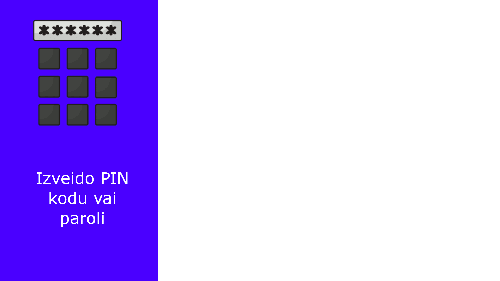

.
.
Mans portfolio
Roberts Misus, 10SB
Teksta apstrāde
Mēs darbojāmies ar Microsoft Word, apguvām dažas jaunas lietas, bet lielākoties atkārtojām un nostiprinājām iepriekš zināto.
Microsoft Word ir teksta procesors, ko izstrādājis Microsoft. Tas pirmoreiz tika izlaists 1983. gadā ar nosaukumu Multi-Tool Word Xenix sistēmām.
Rastra grafika
Esam darbojušies ar Gimp. Veidojām divus logo - vienu sev, otru grupu darbam.
GIMP jeb GNU Image Manipulation Program ir rastra grafikas redaktors, ko lieto fotogrāfiju un citu attēlu apstrādei un izveidei. GIMP bieži tiek izmantots tīmekļa lappušu grafikas elementu un logotipu, izdrukas materiālu izveidei, attēlu lieluma mainīšanai, griešanai, krāsu maiņai, vairāku attēlu apvienošanai, defektu novēršanai un konvertēšanai no viena formāta uz citu. Ar GIMP var izveidot arī vienkāršas gif animācijas.


Vektorgrafika
Mēs esam darbojušies ar Inkscape. Veidojām GIF par savām tēmām.
Inkscape ir bezmaksas, atvērtā pirmkoda vektorgrafikas redaktors, kas izmanto SVG (Scalable Vector Graphics) kā pamatformātu, nodrošinot augstu saderību ar W3C standartiem. Tas ir populārs rīks māksliniecisku un tehnisku ilustrāciju veidošanai, darbojoties uz Windows, macOS un Linux sistēmām.

Izklājlapas
Mācijāmies par Izklājlapām izmantojot Microsoft Excel, tā pat kā ar MS Word, šīs tēmas ietvaros bija diezgan daudz atkārtojuma bet arī dažas jaunas funkcijas.
Microsoft Excel ir izklājlapu lietojumprogrammatūra, ko izstrādājis Microsoft. Tajā lietotājs var veikt skaitļošanas procedūras, tāpat te ir iekļauti dažādi grafiskie līdzekļi, šķērstabulas un Visual Basic for Applications.
Lejupielādē aprēķini.xlsx
3D modelēšana
3D modelēšana bija kaut kas jauns, salīdzinot ar citām tēmām. Mēs izmantojām tiešsaistes modelēšanas vidi Tinkercad.
Tinkercad ir bezmaksas, uz pārlūkprogrammu balstīta 3D modelēšanas un elektronikas simulācijas lietotne, ko izstrādājis Autodesk. To plaši izmanto izglītībā (skolās) datorikas, vizuālās mākslas un matemātikas stundās, lai apgūtu 3D projektēšanas pamatus
Video
Video veidošana, manuprāt, bija visinteresantākā no šī gada tēmām. Mums bija uzdevums izveidot reklāmas video par sava kuba veidošanu un grupu darbam pieškirto kompāniju. Es savu video veidoju ar Microsoft Clipchamp.
Clipchamp
ir Microsoft piederošs, pārlūkprogrammā balstīts bezmaksas video redaktors, kas integrēts Windows 11, bet pieejams arī tiešsaistē (Chrome, Edge) un kā lietotne.
Citas lapas